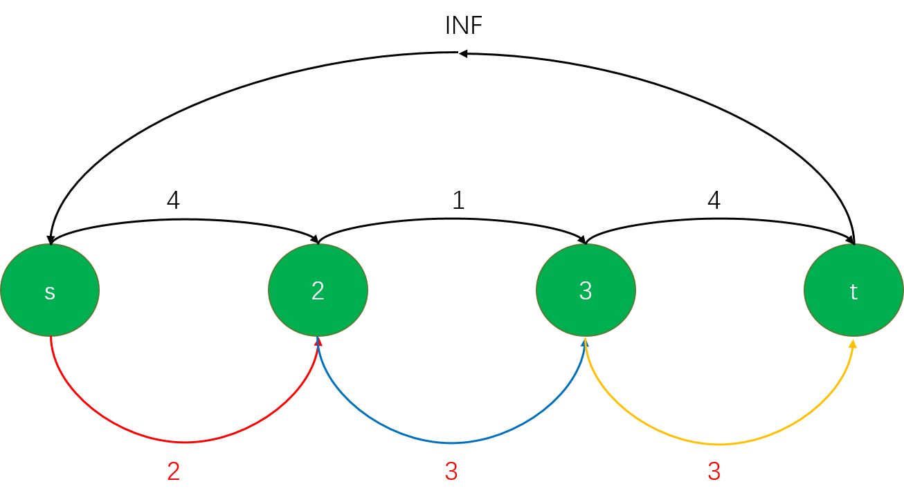
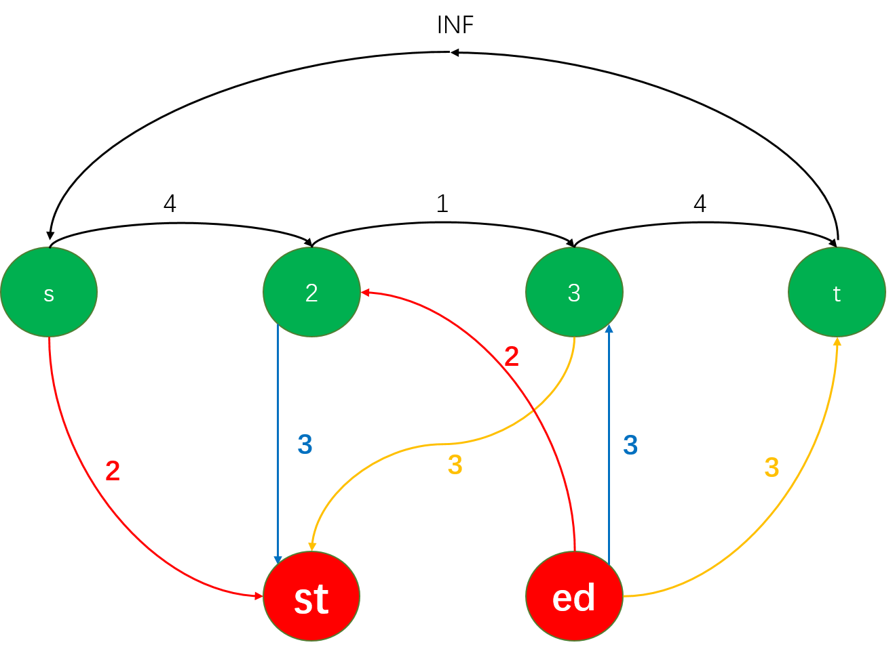

注意到 BN-string 长成什么样根本不重要，我们把它表述为 BN-pair $(x, y)$ 即可，两个 BN-strings 相似的充要条件即两者分别映射得到的 BN-pairs 相等。将 BN-pairs 放到平面上来研究，题目中给出的变换就对应 $(x,y)\rightarrow(x\pm1,y),(x,y\pm1),(x\pm1,y\pm1)$，注意到在斜线方向上的移动只能同时加或减。我们可以用这样移动方式的所派生的 $\text{dist}(a, b)$ 函数导出在平面上的「圆」（是一般意义下的 hexagon），如下图

二分「半径」$r$ 我们现在的问题就转化为了，判定原图上所有点以 $r$ 导出「圆」的是否有交。由于这是个凸图形，我们考虑用六条直线围成的图形来描述，于是两个「圆」有交的充要条件即为「在横轴上有交，且在竖轴上有交，且在 $y=x$ 轴上有交」。前两个的判断都不怎么迷惑，在斜轴（即 $y=x$ 轴）上的判断需要小小的考虑一下。不妨用一条 $y=-x+b$ 的直线来切斜线，如下图

这样把 $y=-x+b$ 看作数轴，我们就把问题转化成了前两个判断，但是实际上我们不需要这个算这个六边形斜线与轴交点的坐标再转化（这样算出来还会带根号，很麻烦），等价地，直接看六边形斜线与已有数轴（即横轴和竖轴）的交点即可。
#include <bits/stdc++.h>
using namespace std;
const int inf = 1e9;
int n, xx[300100], yy[300100];
char s[500100];
int lx, rx, ly, ry, lz, rz;
bool check(int r) {
lx = -inf, rx = inf, ly = -inf, ry = inf, lz = -inf, rz = inf;
for (int i = 1; i <= n; ++i) {
lx = max(lx, xx[i]-r), rx = min(rx, xx[i]+r);
ly = max(ly, yy[i]-r), ry = min(ry, yy[i]+r);
lz = max(lz, xx[i]-yy[i]-r), rz = min(rz, xx[i]-yy[i]+r);
}
lx = max(lx, 0), ly = max(ly, 0);
if (lx > rx || ly > ry || lz > rz) return 0;
return lx-ry <= rz && rx-ly >= lz;
}
signed main() {
ios::sync_with_stdio(0);
cin.tie(0);
cin >> n;
for (int i = 1; i <= n; ++i) {
cin >> s;
for (int j = 0, r = strlen(s); j < r; ++j) {
if (s[j] == 'B') xx[i]++;
else yy[i]++;
}
}
int l = 0, r = 1e9, mid, ans = l;
while (l <= r) {
if (check(mid = (l+r)/2)) {
r = mid-1;
ans = mid;
}
else {
l = mid+1;
}
}
check(ans);
cout << ans << "\n";
for (int i=0;i<min(rx, ry+rz);++i) {
cout << "B";
}
for (int i=0;i<min(min(rx, ry+rz)-lz,ry);++i) {
cout << "N";
}
}